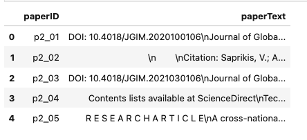
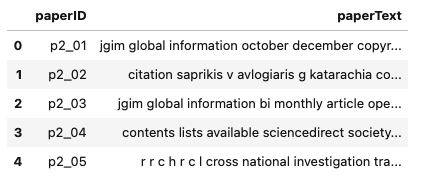
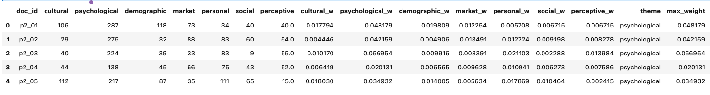
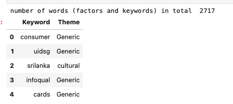
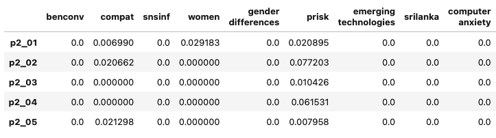
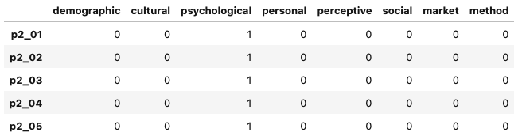
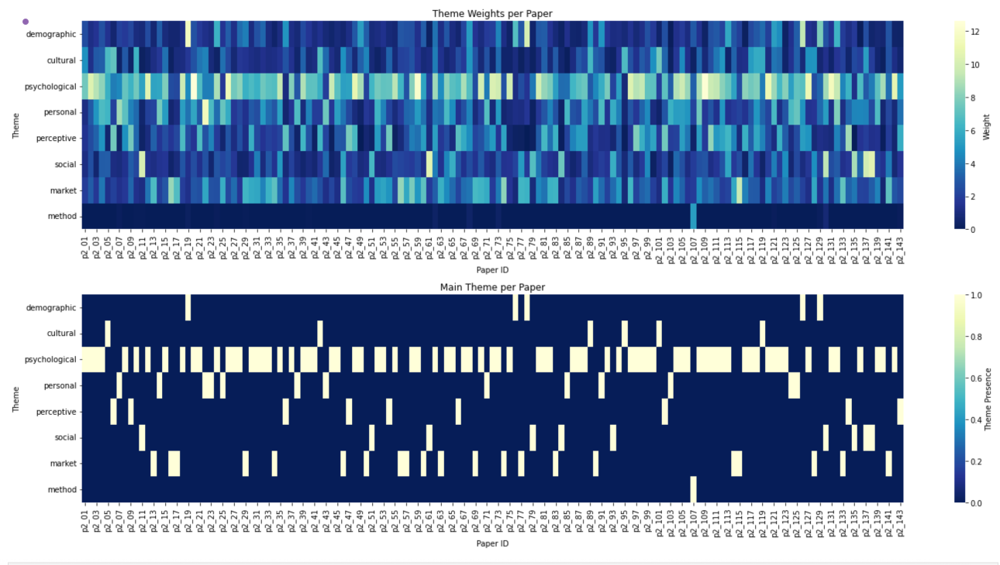
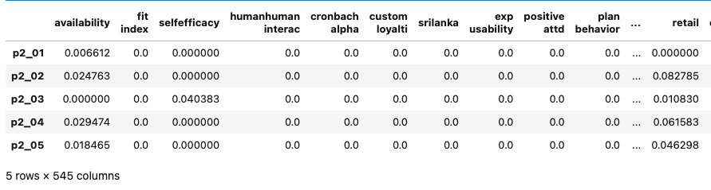

import numpy as np
database = np.array([
{
'id': 'string', # unique identifier for the paper following convention P2_#number
'title': 'string', # title of the paper
'AffiliationCountry': 'string' , #name of country the study was conducted in,
'year': 2018-2024, # year of publication a value between 2018 and 2024
'journal': 'string', # name of the journal the paper was published in
'citations': 0-1000, # number of citations the paper has received - not reported in the paper
'year_since': 3, # number of years since publication - not reported in the paper
'cpy': 0, # number of citations per year - not reported in the paper
'keywords': ['TAM', 'mbanking', 'awareness'], # list of keywords, broken into K1-K10
'abstract': 'string', # abstract of the paper
'F': ['perceived usefulness'], # factors significant in the study, broken into F1-F9
'FN': ['another factor'], # factors not significant in the study, broken into FNS1-FNS4
'limit': ['geographical context'], # limitations of the study, broken into LIMIT1-LIMIT3
'typeofResearch': 'string', # type of research conducted in the study
'methods': ['regression analysis'], # methods used in the study, broken into METHOD1-METHOD4
'theory': ['TAM'] # theories used in the study, broken into THEORY1-THEORY4
'sampleSize': 100, # sample size of the study
'tech': 'string', # main technology studied
'man_theme': 'string', # Theme manually assigned by me
'algo_theme': 'string', # Theme assigned by the algorithm
'decision_Theme': 'string', # Final theme of the paper
'Score_Sig': 0.0, # % of significance for factors
'Score_NOT_Sig': 0.0, # % of non-significance for factors
}
])Algorithmic Approach to Finding Themes
Part 0. Jupyter Notebook
If you want to run the entire code, use the Jupyter notebook on my github page.
Part 1. Data Collection
I downloaded the pdf of all the papers (143), reading them and extracting meta data based on the following:
Idea for future
🤖 Build an Agentic AI application that automates this process.
Part 1.1 Finding Out Themes
First, install the following Python modules. Since I am not familiar with Docker, I couldn’t resolve the package dependencies. This took so much time for me and I finally managed to fix it with this specific configuration. The imports look scary:
import string
import os
import re # regular expression
import pandas as pd
import numpy as np
__requires__= 'scipy==1.12.0'
import scipy
import itertools
import textract # PDF text extraction
import math
import spacy
import fitz #PyMuPDF - another (better) PDF text extraction
#NLP imports
import nltk
from nltk.tokenize import word_tokenize
from nltk.tokenize import sent_tokenize
from nltk.corpus import stopwords
from nltk.stem import WordNetLemmatizer
from nltk.corpus import wordnet
from nltk.stem.porter import PorterStemmer
from nltk.util import ngrams
from nltk.tokenize import RegexpTokenizer
#SKLEARN
from sklearn import metrics
from sklearn import neighbors
from sklearn.feature_extraction.text import CountVectorizer
from sklearn.model_selection import train_test_split
from sklearn.feature_extraction.text import TfidfVectorizer
from sklearn.cluster import KMeans
from sklearn.metrics import mean_squared_error
from sklearn.metrics import r2_score
from sklearn.metrics.pairwise import cosine_similarity
#GENSIMimports
import gensim
from gensim.models import Phrases
from gensim.models.phrases import Phraser
from gensim.corpora.dictionary import Dictionary
from gensim.corpora import MmCorpus
from gensim.models.tfidfmodel import TfidfModel
from gensim.models import CoherenceModel
from gensim.models import KeyedVectors
#PyLDAvis imports for visualization of topic modeling results
# import pyLDAvis
# import pyLDAvis.gensim_models as gensimvis
# import pyLDAvis.gensim
# import pyLDAvis.gensim_models
#MISC imports
from collections import Counter
from collections import defaultdict
from string import punctuation
from pprint import pprint
from numpy import triu
#from scipy.linalg.special_matrices import triu
from scipy.sparse import csr_matrix
#TRANSFORMERS
#import torch
#importtensorflowastf
#from transformers import BertTokenizer, BertModel
#from transformers import AutoTokenizer, AutoModel
#fromtensorflow.keras.modelsimportSequential
#fromtensorflow.keras.preprocessing.textimportTokenizer
#fromtensorflow.keras.preprocessing.sequenceimportpad_sequences
#fromtensorflow.keras.layersimportDense,Embedding,LSTM,SpatialDropout1D
#fromtensorflow.keras.layersimportLeakyReLU
#MATPLOT
import matplotlib.pyplot as plt
import seaborn as snsDownload some of the language support stuff:
# only run once
nltk.download('stopwords')
nltk.download('punkt')
nltk.download('wordnet')
nltk.download('punkt_tab')
#nltk.download('omw-1.4') # Optional
#nltk.download('averaged_perceptron_tagger') # For POS tagging
#nltk.download('averaged_perceptron_tagger_eng') # POS tagging I saved the pdf files’ name in a dictionary like this:
name_of_pdfs = {
'p2_01': "Lonkani et al_2020_A comparative study of trust in mobile banking.pdf",
'p2_02': "Saprikis et al_2022_A comparative study of users versus non-users' behavioral intention towards.pdf",
'p2_03': "Malaquias et al_2021_A cross-country study on intention to use mobile banking.pdf",
'p2_04': "Merhi et al_2019_A cross-cultural study of the intention to use mobile banking between Lebanese.pdf",
'p2_05': "Frimpong et al. - 2020 - A cross‐national investigation of trait antecedent.pdf",
# and so on ...
}Additionally, I defined a dictionary “look up” for all the factors in the dataset with their related theme that looks like this (shortened for this presentation):
theme_of_words = {
'demographic':
list(set(['women', 'woman', 'female', 'men', 'man', 'male', 'sex', 'gender', 'age', 'income',
'demographic variables', 'elderly', 'education', 'gender differences', 'generation y', 'millennial generation',
'millennial', 'gen y', 'gen Z', 'gen alpha', 'gen X', 'boomer', 'babyboomer', 'generation X', 'generation z',
'young consumers',
# A lot more factors ...
])),
#----------------------------------------------------------------------------------------------------------------------------------
'cultural':
list(set(['developing countries','malaysia','transition country','pakistan',
'zakat','developing country','ghana','USA','srilanka', 'sri lanka',
'india','maldives','saudi-arabia','saudi arabia', 'nigeria','thailand','united states',
'yemen','citizenship','zimbabwe','palestine','culture',
'Country perspective',
# ...
])),
#----------------------------------------------------------------------------------------------------------------------------------
'psychological':
list(set(['anxiety','satisfaction','behavior','behaviour','attitudes','attitude','awareness',
'technology anxiety','consumer-behavior','trust','benv','consumer behaviour',
'covid-19 related psychological distress','psychological distress','psychological','distress',
'behavioral','computer anxiety','customer satisfaction', 'cognitive resistance',
# A LOT more ...
]))
,
# ... few other key value pairs corresponding to themes
}I also needed to delete some stop words, and decided to add more words that I knew would be frequently repeated. I also define the lemmer and stemmer.
stop_words = stopwords.words('english')
stop_words.extend(["bank", "banking", "banks",
"mobile", "mbank", "mbanking", "m-bank", "m bank",
"online", "e", "e-bank", "ebank", "mobile banking", "mobile bank",
"adoption", "acceptance", "accept", "theory",
"purpose", "result", "method", #from abstracts
"journal", "volume", "pp", "no", "doi", "http", "https", "et al", "issue",
"technology", "internet", "information system", "international information",
"information technology", "computer human", "mis quarterly", "electornic commerce",
"j market", "telematics and informatics", "telematics informatics", "retail consumer",
"international volume", "international business", "global information",
"et", "al", "al.", "tam", "sem", "pls", "utaut", "tpb",
".com", "management", "marketing", "published", "study",
"research", "literature", "model", #from journal information
"app", "application", "usage"])
stemmer = PorterStemmer()
lemmatizer = WordNetLemmatizer()Set up.
So, I need a few functions as set up for cleaning the text. Function extract_text_from_pdf() is using PyMuPDF to extract text from a PDF file.
#version one using PyMuPDF
def extract_text_from_pdf(filename):
text = ""
try:
doc = fitz.open(filename)
for page_num in range(doc.page_count):
page = doc.load_page(page_num)
text += page.get_text()
except Exception as e:
print(f"Error reading {filename}: {e}")
return textThis function is just one of the data cleaning functions:
def preprocess_Dict(dct):
for k, v in dct.items():
if isinstance(v, list):
processed_list = []
for item in v:
item = item.lower()
item = re.sub(r'http\S+|www\S+|@\S+', '', item)
item = re.sub(r'(?<=\w)-(?=\w)', ' ', item)
item = re.sub(r'[^a-z0-9\s\n]', '', item)
item = re.sub(r'\s+', ' ', item).strip()
item = re.sub(r'\d+', '', item).strip()
# replacing abbreviations
item = item.replace('structural equation model', 'sem')
item = item.replace('technology acceptance model', 'tam')
item = item.replace('unified theory of acceptance and use of technology', 'utaut')
item = item.replace('diffusion of innovation', 'doi')
item = item.replace('partial least squares', 'pls')
item = item.replace('theory of planned behavior', 'tpb')
item = re.sub("perceived usefulness", "pu", item)
item = re.sub("perceived ease of use", "peou", item)
item = re.sub("perceived privacy", "priv", item)
item = re.sub("perceived aesthetics", "p_aest", item)
item = re.sub("perceived relative advantage", "p_rel_adv", item)
item = re.sub("perceived risk", "prisk", item)
item = re.sub("perceived enjoyment","penjy", item)
item = re.sub("perceived intelligence","pintlj", item)
item = re.sub("perceived security","psec", item)
item = re.sub("perceived trust","ptrst", item)
item = re.sub("perceived anthropomorphism","panthro", item)
item = re.sub("perceived value","pval", item)
item = re.sub("perceived compatibility","pcompat", item)
item = re.sub("perceived detterants","pdet", item)
item = re.sub("perceived behavioral control", "p_bhv_ctrl", item)
item = re.sub("perceived credibility","pcred", item)
item = re.sub("perceived cost","pcost", item)
item = re.sub("perceived benefit","pbenef", item)
item = re.sub("perceived convenience","pconv", item)
item = re.sub("perceived usability","pusbl", item)
item = re.sub("perceived privacy concerns", "ppriv_cn", item)
# belief base
item = re.sub("performance expectancy", "peex", item)
item = re.sub("convenience", "conv", item)
item = re.sub("effort expectancy","efex", item)
item = re.sub("access convenience","acc_conv", item)
item = re.sub("reliability", "rely", item)
item = re.sub("behavioral control", "bhv_ctrl", item)
item = re.sub("compatibility", "compat", item)
item = re.sub("normative beliefs", "norm_blf", item)
item = re.sub("normative belief", "norm_blf", item)
item = re.sub("transaction convenience","trans_conv", item)
item = re.sub("post use trust", "post_trst", item)
item = re.sub("post-use trust", "post_trst", item)
item = re.sub("benefit convenience","ben_conv", item)
item = re.sub("search convenience", "srch_conv", item)
item = re.sub("utilitarian expectation", "util_exp", item)
item = re.sub("evaluation convenience", "eval_conv", item)
item = re.sub("expectation", "expect", item)
item = re.sub("possession convenience", "poss_conv", item)
item = re.sub("expected advantage", "exp_adv", item)
# intention
item = re.sub("intention", "intnt", item)
item = re.sub("motivation", "motiv", item)
item = re.sub("automative motivation","auto_motiv", item)
item = re.sub("behavioral intention","bhv_intnt", item)
item = re.sub("control motivation","ctrl_motiv", item)
item = re.sub("controlled motivation", "ctrl_motiv", item)
item = re.sub("hedonic motivation","hed_motiv", item)
item = re.sub("intention to use","intnt_use", item)
# personal
item = re.sub("habit", "habt", item)
item = re.sub("personality","prsnl",item)
item = re.sub("personal factors","prsnl",item)
item = re.sub("personal factor", "prsnl", item)
item = re.sub("digital literacy","dig_lit",item)
item = re.sub("digital capability","dig_cabl",item)
item = re.sub("agreeableness","agrbns",item)
item = re.sub("financial literacy","fin_lit",item)
item = re.sub("previous experience","prv_exp",item)
item = re.sub("life compatibility","life_compat",item)
item = re.sub("lifestyle", "life", item)
item = re.sub("knowledge","know",item)
item = re.sub("functional value","fun_val",item)
item = re.sub("fun value", "fun_val", item)
item = re.sub("utalitarian value","util_val",item)
item = re.sub("epistemic value","epi_val",item)
item = re.sub("monetary value","mon_val",item)
item = re.sub("money value","mon_val",item)
item = re.sub("hedonic value", "hed_val", item)
item = re.sub("emotional value","emo_val",item)
item = re.sub("quality value","qual_val",item)
item = re.sub("value barriers", "val_bar", item)
item = re.sub("value barrier","val_bar",item)
item = re.sub("customer experience about usability","exp_use",item)
item = re.sub("experience","exp",item)
item = re.sub("self employment","semp",item)
item = re.sub("self-employment","semp",item)
item = re.sub("valence","val",item)
item = re.sub("religiosity","religis",item)
item = re.sub("task technology fit","ttf",item)
item = re.sub("lifestyle fit","life_fit",item)
# social
item = re.sub("social interactions on platforms","soc_int_plt", item)
item = re.sub("coercive pressures", "coe_prsr", item)
item = re.sub("coercive pressure", "coe_prsr", item)
item = re.sub("human human interaction","hh_int", item)
item = re.sub("human-human interaction","hh_int", item)
item = re.sub("social influence", "socinf", item)
item = re.sub("collectivist cultural practices", "colcul", item)
item = re.sub("collectivist cultural practice","colcul", item)
item = re.sub("social media influence","snsinf", item)
item = re.sub("normative belief","norm_blf", item)
item = re.sub("interaction","interac", item)
item = re.sub("subjective norm", "sbj_nrm", item)
item = re.sub("subjective norms", "sbj_nrm", item)
item = re.sub("social factors", "soc_fac", item)
item = re.sub("social factor" ,"soc_fac" , item)
item = re.sub("normative pressure","nrm_prsr", item)
item = re.sub("CSR economical responsibility","csr_econ", item)
item = re.sub("social norms", "soc_nrm", item)
item = re.sub("family influence","fam_inf", item)
item = re.sub("people","people", item)
item = re.sub("herd","herd", item)
item = re.sub("CSR social responsibility","csr_soc", item)
item = re.sub("mimetic pressure", "mim_prsr", item)
item = re.sub("CSR environmental responsibility", "csr_env", item)
item = re.sub("social value","soc_val", item)
item = re.sub("social values","soc_val", item)
item = re.sub("employee customer engagement","engg_empcus", item)
item = re.sub("employee-customer engagement","engg_empcus", item)
item = re.sub("social isolation", "soc_iso", item)
item = re.sub("normative pressures","norm_prsr", item)
item = re.sub("social proof social media", "soc_prf_sns", item)
item = re.sub("social proof", "soc_prf", item)
item = re.sub("social media","sns", item)
item = re.sub("word of mouth", "wom", item)
item = re.sub("wom","wom", item)
item = re.sub("word-of-mouth", "wom", item)
item = re.sub("w-o-m", "wom", item)
item = re.sub("wordmouth", "wom", item)
item = re.sub("environment", "env", item)
# psychological
item = re.sub("computer self efficacy","self",item)
item = re.sub("self efficacy","self",item)
item = re.sub("self-efficacy", "self", item)
item = re.sub("attitude", "attd", item)
item = re.sub("attitudes","attd",item)
item = re.sub("trust","trst",item)
item = re.sub("pragmatic","prgt",item)
item = re.sub("security concern", "sec_cn",item)
item = re.sub("security concerns","sec_cn",item)
item = re.sub("self-image", "self_cong", item)
item = re.sub("self image","self_cong",item)
item = re.sub("congruence", "cong", item)
item = re.sub("self-congruence","self_cong",item)
item = re.sub("self congruence", "self_cong", item)
item = re.sub("self-image congruence","self_cong",item)
item = re.sub("self image congruence", "self_cong", item)
item = re.sub("selfimage congruence", "self_cong", item)
item = re.sub("awareness", "awar", item)
item = re.sub("satisfaction","satis",item)
item = re.sub("consumer satisfaction","satis",item)
item = re.sub("customer satisfaction","satis",item)
item = re.sub("restiant to change","resist_chng",item)
item = re.sub("resistance to change","resist_chng",item)
item = re.sub("risk aversion", "risk_avrs", item)
item = re.sub("risk averse","risk_avrs",item)
item = re.sub("novelty","new_seek",item)
item = re.sub("novelty-seeking", "new_seek", item)
item = re.sub("novelty seeking", "new_seek", item)
item = re.sub("consciousnesnness", "conscn", item)
item = re.sub("post-use trust", "post_trst", item)
item = re.sub("post use trust","post_trst",item)
item = re.sub("postuse trust","post_trst",item)
item = re.sub("emotional experience","emo_exp",item)
item = re.sub("agreeableness","agrbns",item)
item = re.sub("privacy concerns","priv_cn",item)
item = re.sub("privacy concern","priv_cn",item)
item = re.sub("cognitive decline","cog_dec",item)
item = re.sub("benevolent convenince","ben_conv",item)
item = re.sub("enjoyment","enjy",item)
item = re.sub("enjoy", "enjy", item)
item = re.sub("hedonic motivation","hed_motiv",item)
item = re.sub("oppenness", "open", item)
item = re.sub("loyal", "loyal", item)
item = re.sub("loyalty","loyal",item)
item = re.sub("confirmation","confrm",item)
item = re.sub("optimism","optim",item)
item = re.sub("safety concerns","safe_cn",item)
item = re.sub("safety concern","safe_cn",item)
item = re.sub("Covid-19 psychological distress", "dist_covid", item)
item = re.sub("Covid19 psychological distress", "dist_covid", item)
item = re.sub("Covid 19 psychological distress","dist_covid",item)
item = re.sub("psychological distress","dist_covid",item)
item = re.sub("green concerns","green_cn",item)
item = re.sub("technology anxiety", "anxiety", item)
item = re.sub("anxiety","anxiety",item)
item = re.sub("obedience", "obed", item)
item = re.sub("empathy","empath",item)
item = re.sub("decision comfort","dec_comfrt",item)
item = re.sub("confidence","confdnc",item)
item = re.sub("decision discomfort", "dec_dis_comfrt", item)
item = re.sub("comfort", "cmfrt", item)
item = re.sub("discomfort","discmfrt",item)
item = re.sub("insecurity", "insec", item)
item = re.sub("insecurities", "insec", item)
item = re.sub("benevolence","benv",item)
item = re.sub("technology stress","tech_strss",item)
item = re.sub("stress", "tech_strss", item)
item = re.sub("techno-stress","tech_strss",item)
item = re.sub("technostress","tech_strss",item)
item = re.sub("techno stress", "tech_strss", item)
item = re.sub("cognitive resistence","cog_resist",item)
# demographic
item = re.sub("age","age",item)
item = re.sub("sex","sex",item)
item = re.sub("education","edu",item)
item = re.sub("income","income",item)
item = re.sub("islamic religiosity","religios",item)
item = re.sub("culture","cltr",item)
item = " ".join([word for word in item.split() if word not in stop_words])
item = " ".join([lemmatizer.lemmatize(word, get_wordnet_pos(word)) for word in item.split()])
#item = " ".join([stemmer.stem(word) for word in item.split()])
processed_list.append(item)
dct[k] = " ".join(processed_list)
else:
v = v.lower()
v = re.sub(r'http\S+|www\S+|@\S+', '', v)
v = re.sub(r'(?<=\w)-(?=\w)', ' ', v)
v = re.sub(r'[^a-z0-9\s\n]', '', v)
v = re.sub(r'\s+', ' ', v).strip()
v = re.sub(r'\d+', '', v).strip()
# replacing abbreviations
v = v.replace('structural equation model', 'sem')
v = v.replace('technology acceptance model', 'tam')
v = v.replace('unified theory of acceptance and use of technology', 'utaut')
v = v.replace('diffusion of innovation', 'doi')
v = v.replace('partial least squares', 'pls')
v = v.replace('theory of planned behavior', 'tpb')
v = re.sub("perceived usefulness", "pu", v)
v = re.sub("perceived ease of use", "peou", v)
v = re.sub("perceived privacy", "priv", v)
v = re.sub("perceived aesthetics", "p_aest", v)
v = re.sub("perceived relative advantage", "p_rel_adv", v)
v = re.sub("perceived risk", "prisk", v)
v = re.sub("perceived enjoyment","penjy", v)
v = re.sub("perceived intelligence","pintlj", v)
v = re.sub("perceived security","psec", v)
v = re.sub("perceived trust","ptrst", v)
v = re.sub("perceived anthropomorphism","panthro", v)
v = re.sub("perceived value","pval", v)
v = re.sub("perceived compatibility","pcompat", v)
v = re.sub("perceived detterants","pdet", v)
v = re.sub("perceived behavioral control", "p_bhv_ctrl", v)
v = re.sub("perceived credibility","pcred", v)
v = re.sub("perceived cost","pcost", v)
v = re.sub("perceived benefit","pbenef", v)
v = re.sub("perceived convenience","pconv", v)
v = re.sub("perceived usability","pusbl", v)
v = re.sub("perceived privacy concerns", "ppriv_cn", v)
v = re.sub("performance expectancy", "peex", v)
v = re.sub("convenience", "conv", v)
v = re.sub("effort expectancy","efex", v)
v = re.sub("access convenience","acc_conv", v)
v = re.sub("reliability", "rely", v)
v = re.sub("behavioral control", "bhv_ctrl", v)
v = re.sub("compatibility", "compat", v)
v = re.sub("normative beliefs", "norm_blf", v)
v = re.sub("normative belief", "norm_blf", v)
v = re.sub("transaction convenience","trans_conv", v)
v = re.sub("post use trust", "post_trst", v)
v = re.sub("post-use trust", "post_trst", v)
v = re.sub("benefit convenience","ben_conv", v)
v = re.sub("search convenience", "srch_conv", v)
v = re.sub("utilitarian expectation", "util_exp", v)
v = re.sub("evaluation convenience", "eval_conv", v)
v = re.sub("expectation", "expect", v)
v = re.sub("possession convenience", "poss_conv", v)
v = re.sub("expected advantage", "exp_adv", v)
# intention
v = re.sub("intention", "intnt", v)
v = re.sub("motivation", "motiv", v)
v = re.sub("automative motivation","auto_motiv", v)
v = re.sub("behavioral intention","bhv_intnt", v)
v = re.sub("control motivation","ctrl_motiv", v)
v = re.sub("controlled motivation", "ctrl_motiv", v)
v = re.sub("hedonic motivation","hed_motiv", v)
v = re.sub("intention to use","intnt_use", v)
# personal
v = re.sub("habit", "habt", v)
v = re.sub("personality","prsnl",v)
v = re.sub("personal factors","prsnl",v)
v = re.sub("personal factor", "prsnl", v)
v = re.sub("digital literacy","dig_lit",v)
v = re.sub("digital capability","dig_cabl",v)
v = re.sub("agreeableness","agrbns",v)
v = re.sub("financial literacy","fin_lit",v)
v = re.sub("previous experience","prv_exp",v)
v = re.sub("life compatibility","life_compat",v)
v = re.sub("lifestyle", "life", v)
v = re.sub("knowledge","know",v)
v = re.sub("functional value","fun_val",v)
v = re.sub("fun value", "fun_val", v)
v = re.sub("utalitarian value","util_val",v)
v = re.sub("epistemic value","epi_val",v)
v = re.sub("monetary value","mon_val",v)
v = re.sub("money value","mon_val",v)
v = re.sub("hedonic value", "hed_val", v)
v = re.sub("emotional value","emo_val",v)
v = re.sub("quality value","qual_val",v)
v = re.sub("value barriers", "val_bar", v)
v = re.sub("value barrier","val_bar",v)
v = re.sub("customer experience about usability","exp_use",v)
v = re.sub("experience","exp",v)
v = re.sub("self employment","semp",v)
v = re.sub("self-employment","semp",v)
v = re.sub("valence","val",v)
v = re.sub("religiosity","religis",v)
v = re.sub("task technology fit","ttf",v)
v = re.sub("lifestyle fit","life_fit",v)
# social
v = re.sub("social interactions on platforms","soc_int_plt", v)
v = re.sub("coercive pressures", "coe_prsr", v)
v = re.sub("coercive pressure", "coe_prsr", v)
v = re.sub("human human interaction","hh_int", v)
v = re.sub("human-human interaction","hh_int", v)
v = re.sub("social influence", "socinf", v)
v = re.sub("collectivist cultural practices", "colcul", v)
v = re.sub("collectivist cultural practice","colcul", v)
v = re.sub("social media influence","snsinf", v)
v = re.sub("normative belief","norm_blf", v)
v = re.sub("interaction","interac", v)
v = re.sub("subjective norm", "sbj_nrm", v)
v = re.sub("subjective norms", "sbj_nrm", v)
v = re.sub("social factors", "soc_fac", v)
v = re.sub("social factor" ,"soc_fac" , v)
v = re.sub("normative pressure","nrm_prsr", v)
v = re.sub("CSR economical responsibility","csr_econ", v)
v = re.sub("social norms", "soc_nrm", v)
v = re.sub("family influence","fam_inf", v)
v = re.sub("people","people", v)
v = re.sub("herd","herd", v)
v = re.sub("CSR social responsibility","csr_soc", v)
v = re.sub("mimetic pressure", "mim_prsr", v)
v = re.sub("CSR environmental responsibility", "csr_env", v)
v = re.sub("social value","soc_val", v)
v = re.sub("social values","soc_val", v)
v = re.sub("employee customer engagement","engg_empcus", v)
v = re.sub("employee-customer engagement","engg_empcus", v)
v = re.sub("social isolation", "soc_iso", v)
v = re.sub("normative pressures","norm_prsr", v)
v = re.sub("social proof social media", "soc_prf_sns", v)
v = re.sub("social proof", "soc_prf", v)
v = re.sub("social media","sns", v)
v = re.sub("word of mouth", "wom", v)
v = re.sub("wom","wom", v)
v = re.sub("word-of-mouth", "wom", v)
v = re.sub("w-o-m", "wom", v)
v = re.sub("wordmouth", "wom", v)
v = re.sub("environment", "env", v)
# psychological
v = re.sub("computer self efficacy","self",v)
v = re.sub("self efficacy","self",v)
v = re.sub("self-efficacy", "self", v)
v = re.sub("attitude", "attd", v)
v = re.sub("attitudes","attd",v)
v = re.sub("trust","trst",v)
v = re.sub("pragmatic","prgt",v)
v = re.sub("security concern", "sec_cn",v)
v = re.sub("security concerns","sec_cn",v)
v = re.sub("self-image", "self_cong", v)
v = re.sub("self image","self_cong",v)
v = re.sub("congruence", "cong", v)
v = re.sub("self-congruence","self_cong",v)
v = re.sub("self congruence", "self_cong", v)
v = re.sub("self-image congruence","self_cong",v)
v = re.sub("self image congruence", "self_cong", v)
v = re.sub("selfimage congruence", "self_cong", v)
v = re.sub("awareness", "awar", v)
v = re.sub("satisfaction","satis",v)
v = re.sub("consumer satisfaction","satis",v)
v = re.sub("customer satisfaction","satis",v)
v = re.sub("restiant to change","resist_chng",v)
v = re.sub("resistance to change","resist_chng",v)
v = re.sub("risk aversion", "risk_avrs", v)
v = re.sub("risk averse","risk_avrs",v)
v = re.sub("novelty","new_seek",v)
v = re.sub("novelty-seeking", "new_seek", v)
v = re.sub("novelty seeking", "new_seek", v)
v = re.sub("consciousnesnness", "conscn", v)
v = re.sub("post-use trust", "post_trst", v)
v = re.sub("post use trust","post_trst",v)
v = re.sub("postuse trust","post_trst",v)
v = re.sub("emotional experience","emo_exp",v)
v = re.sub("agreeableness","agrbns",v)
v = re.sub("privacy concerns","priv_cn",v)
v = re.sub("privacy concern","priv_cn",v)
v = re.sub("cognitive decline","cog_dec",v)
v = re.sub("benevolent convenince","ben_conv",v)
v = re.sub("enjoyment","enjy",v)
v = re.sub("enjoy", "enjy", v)
v = re.sub("hedonic motivation","hed_motiv",v)
v = re.sub("oppenness", "open", v)
v = re.sub("loyal", "loyal", v)
v = re.sub("loyalty","loyal",v)
v = re.sub("confirmation","confrm",v)
v = re.sub("optimism","optim",v)
v = re.sub("safety concerns","safe_cn",v)
v = re.sub("safety concern","safe_cn",v)
v = re.sub("Covid-19 psychological distress", "dist_covid", v)
v = re.sub("Covid19 psychological distress", "dist_covid", v)
v = re.sub("Covid 19 psychological distress","dist_covid",v)
v = re.sub("psychological distress","dist_covid",v)
v = re.sub("green concerns","green_cn",v)
v = re.sub("technology anxiety", "anxiety", v)
v = re.sub("anxiety","anxiety",v)
v = re.sub("obedience", "obed", v)
v = re.sub("empathy","empath",v)
v = re.sub("decision comfort","dec_comfrt",v)
v = re.sub("confidence","confdnc",v)
v = re.sub("decision discomfort", "dec_dis_comfrt", v)
v = re.sub("comfort", "cmfrt", v)
v = re.sub("discomfort","discmfrt",v)
v = re.sub("insecurity", "insec", v)
v = re.sub("insecurities", "insec", v)
v = re.sub("benevolence","benv",v)
v = re.sub("technology stress","tech_strss",v)
v = re.sub("stress", "tech_strss", v)
v = re.sub("techno-stress","tech_strss",v)
v = re.sub("technostress","tech_strss",v)
v = re.sub("techno stress", "tech_strss", v)
v = re.sub("cognitive resistence","cog_resist",v)
# demographic
v = re.sub("age","age",v)
v = re.sub("sex","sex",v)
v = re.sub("education","edu",v)
v = re.sub("income","income",v)
v = re.sub("islamic religiosity","religios",v)
v = re.sub("culture","cltr",v)
v = " ".join([word for word in v.split() if word not in stop_words])
v = " ".join([lemmatizer.lemmatize(word, get_wordnet_pos(word)) for word in v.split()])
#v = " ".join([stemmer.stem(word) for word in v.split()])
dct[k] = v
return dct
def tokenizeToSentences(doc):
for k, v in doc.items():
if isinstance(v, bytes):
v = v.decode('utf-8')
v = v.lower()
v = v.replace('\n', ' ')
v = re.sub(r'http\S+www\S+@\S+', '', v)
#v = " ".join([str(s) for s in v])
v = sent_tokenize(v)
doc[k] = v
return docFor Topic modeling, I write a function to generate dictionaries and save them in a .mm file format.
def generate_dictionary(text, name):
"""
As input takes in the text to build the dictionary for and the name of a .mm file
"""
dictionary = Dictionary(text)
corpus = [dictionary.doc2bow(review) for review in text]
filename = f"{name}.mm"
MmCorpus.serialize(filename, corpus)
return dictionary, corpusAdditionally, I want a function that prints the top 50 most frequently appearing words in the corpus:
# ---------------------- START OF CHATGPT CODE
def print_top_50_words(corpus, dictionary):
total_word_count = defaultdict(int)
word_weights = defaultdict(float)
for word_id, word_count in itertools.chain.from_iterable(corpus):
total_word_count[word_id] += word_count
sorted_tota_words_count = sorted(total_word_count.items(), key = lambda w: w[1], reverse = True)
tfidf = TfidfModel(corpus)
for doc in corpus:
tfidf_weights = tfidf[doc] # Calculate TF-IDF for the review
for term_id, weight in tfidf_weights:
word_weights[term_id] += weight # Aggregate the weight for the term
sorted_word_weights = sorted(word_weights.items(), key=lambda x: x[1], reverse=True)
# Print the top 50 terms with their weights
top_50_words = [(dictionary.get(term_id), weight) for term_id, weight in sorted_word_weights[:50]]
for word, weight in top_50_words:
print(word, weight)
# ---------------------- END OF CHATGPT CODE I also plan on seeing how python clusters the words (as in, finds similar words) vs me:
def print_clusters(n_clusters, list_of_words):
clusters = {i: [] for i in range(n_clusters)}
for word, label in zip(list_of_words, labels):
clusters[label].append(word)
for label, words in clusters.items():
print(f"Cluster {label}:")
for word in words:
print(f" {word}")
print("\n")
# Explain clusters
print("Cluster explanations based on semantics and ideas:")
for label, words in clusters.items():
print(f"Cluster {label} might be related to:")
for word in words:
print(f" {word}")
print("\n")This is a function for if you want to use a word embedding (requires some effort, time and machine power!):
def get_embedding(text):
tokenizer = BertTokenizer.from_pretrained('bert-base-uncased')
model_bert = BertModel.from_pretrained('bert-base-uncased')
inputs = tokenizer(text, return_tensors='pt', truncation=True, padding=True, max_length=20)
with torch.no_grad():
outputs = model_bert(**inputs)
return outputs.last_hidden_state.mean(dim=1).squeeze().numpy()And then you use this to get semantically similar words:
def get_semantically_similar_words(words, threshold=0.7):
similar_words = set(words)
for word in words:
token = nlp(word)
for vocab_word in nlp.vocab:
if vocab_word.has_vector and vocab_word.is_alpha:
similarity = token.similarity(nlp(vocab_word.text))
if similarity >= threshold:
similar_words.add(vocab_word.text)
return similar_wordsSo, how do I find the themes? Essentially, I just tweaked TF-IDF:
class CustomTfidfVectorizer(TfidfVectorizer):
def __init__(self, vocabulary=None, **kwargs):
super().__init__(vocabulary=vocabulary, **kwargs)
#self.general_keywords = set(general_keywords)
def build_analyzer(self):
analyzer = super().build_analyzer()
return lambda doc: [w for w in analyzer(doc)] #if w not in self.general_keywords]
def fit(self, raw_documents, y=None):
self.fit_transform(raw_documents, y)
return self
def fit_transform(self, raw_documents, y=None):
X = super().fit_transform(raw_documents, y)
self.max_frequencies = self._compute_max_frequencies(X, raw_documents)
return X
def transform(self, raw_documents):
X = super().transform(raw_documents)
# Calculate augmented term frequency
max_frequencies = self.max_frequencies
max_frequencies[max_frequencies == 0] = 1 # Avoid division by zero
augmented_tf = 0.5 + 0.5 * (X.toarray() / max_frequencies[:, None])
# Penalize general keywords
#penalized_idf = self.idf_ * (1 - 0.8 * np.isin(self.get_feature_names_out(), list(self.general_keywords)))
# Apply penalized IDF
augmented_tfidf = augmented_tf * penalized_idf
return csr_matrix(augmented_tfidf)
def _compute_max_frequencies(self, X, raw_documents):
max_frequencies = np.zeros(X.shape[0])
for i, doc in enumerate(raw_documents):
term_freq = {}
for term in doc.split():
if term in term_freq:
term_freq[term] += 1
else:
term_freq[term] = 1
max_frequencies[i] = max(term_freq.values())
return max_frequenciesKeyword Analytics
try:
df = pd.read_csv("P2_AR_04.csv", encoding='utf-8')
except UnicodeDecodeError:
try:
df = pd.read_csv("P2_AR_04.csv", encoding='latin-1')
except Exception as e:
error_message = str(e)
df = NoneClean all the data you’ve gathered the same way the PDF’s have been cleaned (the preprocess_text() function looks very similar to the cleaning function above!):
df2 = df.copy()
columns_to_preprocess = ['Man_Theme',
'K1','K2','K3','K4','K5','K6','K7','K8','K9','K10',
'F1','F2','F3','F4','F5','F6','F7','F8','F9',
'FNS1','FNS2','FNS3','FNS4',
'METHOD1','METHOD2','METHOD3','METHOD4',
'THEORY1','THEORY2','THEORY3','THEORY4',
'LIMIT1' ,'LIMIT2' ,'LIMIT3', 'Abstract'
]
for col in columns_to_preprocess:
df2[col] = df2[col].apply(preprocess_text)papers = {}
for paper_id, filename in name_of_pdfs.items():
text = extract_text_from_pdf(filename)
papers[paper_id] = text
papers_df = pd.DataFrame.from_dict(papers, orient = 'index', columns = ['paperText'])
papers_df = papers_df.reset_index(names = ['paperID'])
papers_df.to_csv('papers_unclean.csv')
papers_df.head()These look like this: 
# keep a copy (a habit of mine)
papers_uncleaned = papers.copy()
theme_of_words_uncleaned = theme_of_words.copy()
# clean up all papers
papers_cleaned = preprocess_Dict(papers)
papersClean_df = pd.DataFrame.from_dict(papers_cleaned, orient = 'index', columns = ['paperText'])
papersClean_df = papersClean_df.reset_index(names = ['paperID'])
papersClean_df.to_csv('papers_clean3.csv')
papersClean_df.head()
Clean the theme of words dictionary so the words match:
theme_of_words_cleaned = {}
for k, v in theme_of_words.items():
theme_of_words_cleaned[k] = preprocess_list(v)
theme_of_words_cleaned['psychological'][:10][‘initial trst’,‘simcong’,‘hedmotiv’,‘selfefficacy’,‘strss’,‘controlled motiv’,‘cong’,‘selfcong cong’,‘trst systems’,‘custom loyalti’]
Make sure to drop all NA’s and empty values:
for k, v in theme_of_words_cleaned.items():
theme_of_words_cleaned[k] = [x for x in v if x not in [None, "", ' ', 'NaN'] and not (isinstance(x, float) and math.isnan(x))]Themes Based on Count of Words in Each Group
I will skip the parts on BERT and word embeddings that’s in the jupyter notebook as these were not used for my project. The reason is that it was taking so long and my computer simply did not have the capacity to handle it. I also didn’t have the time to find a fix for it, but there are a bunch of commented-out code from chatGPT that I was playing around with.
So, we now have a dictionary with the factors and their theme, and a corpus of text of all papers in the dataset. What I’m going to do here is: * Count all the words total_words in each paper * Count the instances of each word (factor) in theme_of_words_cleaned in each paper * Each word’s count adds 1 point to its corresponding theme’s “weight score” * Take for example the word emotion and I said the theme for this word is psychological. If emotion shows up 10 times in paper 1, paper 1’s dictionary of weights has a weight of 10 for (divided by the total number of words) psychological.
results = []
count_words_df = pd.DataFrame(results)
for doc_id, text in papers_cleaned.items():
doc = nlp(text)
word_counts = defaultdict(int)
for token in doc:
for group, keywords in theme_of_words_cleaned.items():
if token.text.lower() in keywords:
word_counts[group] += 1
total_words = len(doc)
group_weights = {f"{group}_w": count / total_words for group, count in word_counts.items()}
max_weight = max(group_weights.values(), default=0)
theme = max(group_weights, key=group_weights.get).replace("_w", "") if max_weight > 0 else None
result = {"doc_id": doc_id, **word_counts, **group_weights, "theme": theme, "max_weight": max_weight}
results.append(result)
for group in theme_of_words_cleaned.keys():
if group not in count_words_df.columns:
count_words_df[group] = 0
if f"{group}_w" not in count_words_df.columns:
count_words_df[f"{group}_w"] = 0.0
count_words_df.head()
This is still very basic, though because it’s only based on the factors which may not be fully representative. So, I do this again using keywords in addition to the factors. These are keywords that were selected by the authors as well as information extracted from Web of Science \BibTeX file.
cols_toPick = ['K1','K2','K3','K4','K5','K6','K7','K8','K9','K10','F1','F2','F3','F4','F5','F6','F7','F8','F9']
keywordsDf = df2.loc[:,cols_toPick]
# flatten the dataframe to a list
keywords_across_db = keywordsDf.values.flatten().tolist()
# there are 2,717 words here
print("number of words (factors and keywords) in total ", len(keywords_across_db))
# making sure there are no empty/NaN/Null values
keywords_across_db = [x for x in keywords_across_db if x not in [None, "", ' ', 'NaN'] and not (isinstance(x, float) and math.isnan(x))]
# making sure there are no duplicates (set takes care of this)
keywords_across_db_nodup_cleaned = list(set(keywords_across_db))
# convert the list into a dictionary temporarily, then convert it to a dataframe
temp = {'Keyword': keywords_across_db_nodup_cleaned}
keywords_themes_df = pd.DataFrame(temp, columns=['Keyword'])
# go back to the theme_of_words_cleaned and find each keyword's theme
keywords_themes_dic = {keyword: theme for theme, keywords in theme_of_words_cleaned.items() for keyword in keywords}
# This is just a dataframe view of the keywords with their respective theme
keywords_themes_df['Theme'] = keywords_themes_df['Keyword'].map(keywords_themes_dic)
# if the theme is empty, give it "Generic" - that means these keywords weren't in the list of important words that we picked themes for
keywords_themes_df['Theme'] = keywords_themes_df['Theme'].apply(lambda x: 'Generic' if pd.isna(x) or x == ' ' else x)
keywords_themes_df.head()
I’m gonna get rid of all the Generic keywords, so keeping a copy of this dataframe:
keywords_themes_df_withGenerics = keywords_themes_df.copy()
keywords_themes_df['Theme'] = keywords_themes_df['Theme'].apply(lambda x: 'Generic' if pd.isna(x) or x == ' ' else x)
# everything but generic
keywords_themes_df = keywords_themes_df.loc[keywords_themes_df['Theme'] != 'Generic']
# flatten it to build a vocabulary
words_acrossAll_nonGeneric = keywords_themes_df['Keyword'].values.flatten().tolist()
# making sure no null values were generated
words_acrossAll_nonGeneric = [x for x in words_acrossAll_nonGeneric if x not in [None, "", ' ', 'NaN'] and not (isinstance(x, float) and math.isnan(x))]
# making sure there are no dulicates (233 words total)
words_acrossAll_nonGeneric = list(set(words_acrossAll_nonGeneric))Theme Assignment
I will now use the custom TF-IDF class to generate a TF-IDF matrix. This is similar to what I did by hand a bit further above. Basically, all TF-IDF is doing is counting the frequency of words across the document.
vectorizer_keys = CustomTfidfVectorizer(vocabulary = words_acrossAll_nonGeneric)
tfidf_matrix = vectorizer_keys.fit_transform(papers_cleaned.values())
tfidf_df = pd.DataFrame(tfidf_matrix.toarray(), index = papers_cleaned.keys(), columns=vectorizer_keys.get_feature_names_out())
tfidf_df.head()
Now using TF-IDF scores, finding the weights for themes for each paper:
keyword_to_theme = {keyword: theme for theme, keywords in theme_of_words_cleaned.items() for keyword in keywords}
theme_weights = pd.DataFrame(0, index=tfidf_df.index, columns=theme_of_words_cleaned.keys())
for keyword, theme in keyword_to_theme.items():
if keyword in tfidf_df.columns:
theme_weights[theme] += tfidf_df[keyword]
for _, row in df2.iterrows():
paper_id = row['ID']
keywords = words_acrossAll_nonGeneric
for keyword in keywords:
if keyword in tfidf_df.columns:
theme = keyword_to_theme.get(keyword, None)
if theme:
#if theme in tfidf_df.index:
theme_weights.at[paper_id, theme] += tfidf_df.at[paper_id, keyword] * 5
# this is picking just 1 theme per paper - find the theme with the maximum weight as the main theme of the paper
main_theme_df = theme_weights.apply(lambda row: (row == row.max()).astype(int), axis=1)
main_theme_df.head()
Visualizing this:
fig, axes = plt.subplots(nrows=2, ncols=1, figsize=(20, 10))
# Heatmap for theme weights
sns.heatmap(theme_weights.T, ax=axes[0], cmap="YlGnBu_r", cbar_kws={'label': 'Weight'})
axes[0].set_xlabel("Paper ID")
axes[0].set_ylabel("Theme")
axes[0].set_title("Theme Weights per Paper")
# Heatmap for main themes
sns.heatmap(main_theme_df.T, ax=axes[1], cmap="YlGnBu_r", cbar_kws={'label': 'Theme Presence'})
axes[1].set_xlabel("Paper ID")
axes[1].set_ylabel("Theme")
axes[1].set_title("Main Theme per Paper")
plt.tight_layout()
plt.show()
plt.savefig('main_themes_heatmap_1.png')
To extract the themes easily:
# Extract themes for each paper
themes_for_papers = {
paper_id: main_theme_df.columns[row.astype(bool)].tolist()
for paper_id, row in main_theme_df.iterrows()
}
# Print the themes for each paper
for paper_id, themes in themes_for_papers.items():
print(f"Paper ID: {paper_id}, Themes: {', '.join(themes)}")Paper ID: p2_01, Themes: psychological Paper ID: p2_02, Themes: psychological Paper ID: p2_03, Themes: psychological Paper ID: p2_04, Themes: psychological Paper ID: p2_05, Themes: psychological Paper ID: p2_06, Themes: perceptive Paper ID: p2_07, Themes: personal Paper ID: p2_08, Themes: personal Paper ID: p2_09, Themes: perceptive Paper ID: p2_10, Themes: psychological
Since Topic Modeling is Multimembership, papers can have more than just 1 theme. Since I didn’t use a word embedding and may not get the best representatitve theme here, I decided to allow for up to 3 themes. To do this, I changed the CustomTfidfVectorizer class.
ALLOWING FOR MULTIPLE THEMES
class CustomTfidfVectorizerUpdateClass(TfidfVectorizer):
def __init__(self, theme_keywords, threshold=0.8, **kwargs):
# Generate vocabulary from theme_keywords
vocabulary = list(set(word for words in theme_keywords.values() for word in words))
super().__init__(vocabulary=vocabulary, **kwargs)
self.threshold = threshold # Threshold for determining multiple themes
self.theme_keywords = theme_keywords # Store theme_keywords for later use
def build_analyzer(self):
analyzer = super().build_analyzer()
return lambda doc: [w for w in analyzer(doc)]
def fit(self, raw_documents, y=None):
self.fit_transform(raw_documents, y)
return self
def fit_transform(self, raw_documents, y=None):
X = super().fit_transform(raw_documents, y)
self.max_frequencies = self._compute_max_frequencies(X, raw_documents)
return X
def transform(self, raw_documents):
X = super().transform(raw_documents)
# Calculate augmented term frequency
max_frequencies = self.max_frequencies
max_frequencies[max_frequencies == 0] = 1 # Avoid division by zero
augmented_tf = 0.5 + 0.5 * (X.toarray() / max_frequencies[:, None])
augmented_tfidf = augmented_tf # No penalized IDF applied here
return csr_matrix(augmented_tfidf)
def determine_themes(self, documents_dict):
"""
Determines the themes for each document based on TF-IDF scores.
A paper can have multiple themes if the scores are within the threshold.
:param documents_dict: Dictionary of documents (keys: IDs, values: text)
:return: Dictionary where keys are document IDs and values are lists of themes
"""
document_ids = list(documents_dict.keys())
raw_documents = list(documents_dict.values())
X = self.transform(raw_documents).toarray()
feature_name_to_index = {name: i for i, name in enumerate(self.get_feature_names_out())}
theme_scores = {}
for doc_index, doc_vector in enumerate(X):
doc_id = document_ids[doc_index]
# Calculate scores for each theme
scores = {
theme: sum(doc_vector[feature_name_to_index[word]]
for word in keywords if word in feature_name_to_index)
for theme, keywords in self.theme_keywords.items()
}
max_score = max(scores.values()) if scores else 0
# Determine themes within the threshold
selected_themes = [
theme for theme, score in scores.items()
if score >= self.threshold * max_score
]
theme_scores[doc_id] = selected_themes
return theme_scores
def _compute_max_frequencies(self, X, raw_documents):
max_frequencies = np.zeros(X.shape[0])
for i, doc in enumerate(raw_documents):
term_freq = {}
for term in doc.split():
if term in term_freq:
term_freq[term] += 1
else:
term_freq[term] = 1
max_frequencies[i] = max(term_freq.values())
return max_frequenciesSimilar to the above task, I generate the vectorizer from theme_of_words_cleaned vocabulary, but this time, allow for a few more themes (threshold = 0.75).
vectorizer_keys2 = CustomTfidfVectorizerUpdateClass(theme_keywords = theme_of_words_cleaned, threshold = 0.75)
tfidf_matrix2 = vectorizer_keys2.fit_transform(papers_cleaned.values())
tfidf_df2 = pd.DataFrame(tfidf_matrix2.toarray(), index=papers_cleaned.keys(), columns=vectorizer_keys2.get_feature_names_out())
tfidf_df2.head()
You can still pick a main theme for each paper, but I want to see the top 3 themes:
keyword_to_theme2 = {keyword: theme for theme, keywords in theme_of_words_cleaned.items() for keyword in keywords}
theme_weights2 = pd.DataFrame(0, index=tfidf_df2.index, columns=theme_of_words_cleaned.keys())
for keyword, theme in keyword_to_theme2.items():
if keyword in tfidf_df2.columns:
theme_weights2[theme] += tfidf_df2[keyword]
for _, row in df2.iterrows():
paper_id = row['ID']
#for keyword in words_acrossAll_nonGeneric:
for keyword in vectorizer_keys2.get_feature_names_out():
if keyword in tfidf_df2.columns:
theme = keyword_to_theme2.get(keyword, None)
if theme:
# the 5 I'm adding here is just to make the weights a bit larger for visualization. It's a simple scaling and won't change the results
theme_weights2.at[paper_id, theme] += tfidf_df2.at[paper_id, keyword] * 5
top_3_themes_for_papers = {
paper_id: theme_weights2.loc[paper_id]
.sort_values(ascending=False)[:3]
.index.tolist()
for paper_id in theme_weights2.index
}
for paper_id, themes in top_3_themes_for_papers.items():
print(f"Paper ID: {paper_id}, Top 3 Themes: {', '.join(themes)}")Paper ID: p2_01, Top 3 Themes: psychological, cultural, demographic Paper ID: p2_02, Top 3 Themes: psychological, market, personal Paper ID: p2_03, Top 3 Themes: psychological, personal, perceptive Paper ID: p2_04, Top 3 Themes: psychological, personal, perceptive Paper ID: p2_05, Top 3 Themes: cultural, personal, psychological Paper ID: p2_06, Top 3 Themes: perceptive, cultural, psychological Paper ID: p2_07, Top 3 Themes: personal, psychological, demographic Paper ID: p2_08, Top 3 Themes: psychological, personal, perceptive Paper ID: p2_09, Top 3 Themes: perceptive, psychological, personal Paper ID: p2_10, Top 3 Themes: psychological, cultural, personal
Keep a copy and save this to file:
df3 = df2.copy()
top_3_themes_for_papers = {
paper_id: ", ".join(theme_weights2.loc[paper_id]
.sort_values(ascending=False)[:3]
.index.tolist())
for paper_id in theme_weights2.index
}
df3["Algo_Theme"] = df2["ID"].map(top_3_themes_for_papers)
df3.to_csv("NewWithThemes.csv")